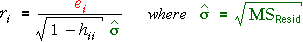

Need for standardisation
In the previous page, we showed that all residuals do not have the same variance,
Since the residuals at the high-leverage points have lower variances, they are expected to be smaller and fewer than 95% will be outside the ±2σ limits that are often used to suggest outliers.
Standardisation
We therefore standardise the residuals before examining or plotting them,

(Remember that the mean square residual is the best estimate of σ2. This has the effect of scaling up the residuals, especially for the high leverage points.
If the normal linear model holds, the standardised residuals will have approximately normal(0, 1) distributions.
Examples
The diagram below shows a few regression data sets. The ordinary residuals are initially displayed on the right.
Select Standardised residual from the pop-up menu to display the standardised residuals. This makes the residuals on the left and right (with higher leverage) slightly larger, relative to the residuals in the centre.
Repeat with other data sets.
Guidelines for interpreting standardised residuals
If the normal linear model holds, the standardised residuals have approximately standard normal distributions. Therefore approximately 95% of them will be between -2 and +2, and almost all will be between -3 and +3.
Many statistical programs automatically flag standardised residuals outside these ranges as being possible outliers.
Note however that you should expect 5% of standardised residuals to be >2 or <-2, so in large data sets it is not unusual to find several residuals outside ±2 and even a few outside ±3. (There is probability 0.003 that a value from the standard normal distribution will be outside ±3, so it would be expected that 3 values would be outside this range in a data set of 1,000 values.)
In large data sets, do not assume that standardised residuals outside ±3 must be outliers — values a little outside can also occur by chance.
Illustration
The diagram below simulates data from a normal linear model.
Initially the sample size is 20. Generate a few data sets and observe that it is not unusual to find a standardised residual outside ±2.
Increase the sample size and take a few more samples. Observe that standardised residuals outside ±3 occasionally occur.